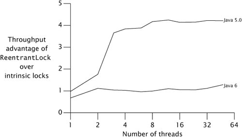

{% include JB/setup %}
{% raw %}
<div>


<a href="21021536.html" class="calibre2"></a><a name="ch13lev1sec2" class="calibre18" id="ch13lev1sec2"></a>
<h3 id="title-IDAE5MNJ" class="docSection1Title">13.2. Performance Considerations</h3>
<p class="docText1">When <tt class="calibre25">ReentrantLock</tt> was added in Java 5.0, it offered far better contended performance than intrinsic locking. For synchronization primitives, contended performance is the key to scalability: if more resources are expended on lock management and scheduling, fewer are available for the application. A better lock implementation makes fewer system calls, forces fewer context switches, and initiates less memory-synchronization traffic on the shared memory bus, operations that are time-consuming and divert computing resources from the program.</p>
<p class="docText1">Java 6 uses an improved algorithm for managing intrinsic locks, similar to that used by <tt class="calibre25">ReentrantLock</tt>, that closes the scalability gap considerably. <a class="calibre2" href="#ch13fig01">Figure 13.1</a> shows the performance difference between intrinsic locks and <tt class="calibre25">ReentrantLock</tt> on Java 5.0 and on a prerelease build of Java 6 on a four-way Opteron system running Solaris. The curves represent the "speedup" of <tt class="calibre25">ReentrantLock</tt> over intrinsic locking on a single JVM version. On Java 5.0, <tt class="calibre25">ReentrantLock</tt> offers considerably better throughput, but on Java 6, the two are quite close.<sup class="docFootnote"><a class="calibre2" href="#ch13fn02">[2]</a></sup> The test program is the same one used in <a class="calibre2" href="ch11lev1sec5.html#ch11lev1sec5">Section 11.5</a>, this time comparing the throughput of a <tt class="calibre25">HashMap</tt> guarded by an intrinsic lock and by a <tt class="calibre25">ReentrantLock</tt>.</p><blockquote class="calibre19"><p class="docFootnote1"><sup class="calibre27"><a name="ch13fn02" class="calibre18" id="ch13fn02">[2]</a></sup> Though this particular graph doesn't show it, the scalability difference between Java 5.0 and Java 6 really does come from improvement in intrinsic locking, rather than from regression in <tt class="calibre35">Reentrant-Lock</tt>.</p></blockquote>
<p class="docText1"></p><a name="ch13fig01" class="calibre18" id="ch13fig01"></a><p class="calibre21"><div class="calibre12">
<h5 class="docExampleTitle">Figure 13.1. Intrinsic Locking Versus <tt class="calibre33">ReentrantLock</tt> Performance on Java 5.0 and Java 6.</h5>
</div></p><p class="docText1"><div class="v8"><a target="_self" href="13fig01_alt.jpg" class="calibre2">[View full size image]</a></div></p>
<p class="calibre1"> </p>
<p class="docText1"><a name="iddle1184" class="calibre18" id="iddle1184"></a><a name="iddle1185" class="calibre18" id="iddle1185"></a><a name="iddle1186" class="calibre18" id="iddle1186"></a><a name="iddle2322" class="calibre18" id="iddle2322"></a><a name="iddle2323" class="calibre18" id="iddle2323"></a><a name="iddle2328" class="calibre18" id="iddle2328"></a><a name="iddle3137" class="calibre18" id="iddle3137"></a><a name="iddle4982" class="calibre18" id="iddle4982"></a><a name="iddle4983" class="calibre18" id="iddle4983"></a>On Java 5.0, the performance of intrinsic locking drops dramatically in going from one thread (no contention) to more than one thread; the performance of <tt class="calibre25">ReentrantLock</tt> drops far less, showing its better scalability. But on Java 6, it is a different storyintrinsic locks no longer fall apart under contention, and the two scale fairly similarly.</p>
<p class="docText1">Graphs like <a class="calibre2" href="#ch13fig01">Figure 13.1</a> remind us that statements of the form "<span class="docEmphasis">X</span> is faster than <span class="docEmphasis">Y</span>" are at best short-lived. Performance and scalability are sensitive to platform factors such as CPU, processor count, cache size, and JVM characteristics, all of which can change over time. <sup class="docFootnote"><a class="calibre2" href="#ch13fn03">[3]</a></sup></p><blockquote class="calibre19"><p class="docFootnote1"><sup class="calibre27"><a name="ch13fn03" class="calibre18" id="ch13fn03">[3]</a></sup> When we started this book, <tt class="calibre35">ReentrantLock</tt> seemed the last word in lock scalability. Less than a year later, intrinsic locking gives it a good run for its money. Performance is not just a moving target, it can be a fast-moving target.</p></blockquote>
<a name="ch13sb01" class="calibre18" id="ch13sb01"></a><p class="calibre21"><table cellspacing="0" width="90%" border="1" cellpadding="5" class="calibre5"><tr class="calibre6"><td class="calibre28">
<p class="docText1">Performance is a moving target; yesterday's benchmark showing that <span class="docEmphasis">X</span> is faster than <span class="docEmphasis">Y</span> may already be out of date today.</p>
</td></tr></table></p><p class="calibre1"> </p>
<a href="21021536.html" class="calibre2"></a>
<p class="calibre3"> </p>

</div>

{% endraw %}

